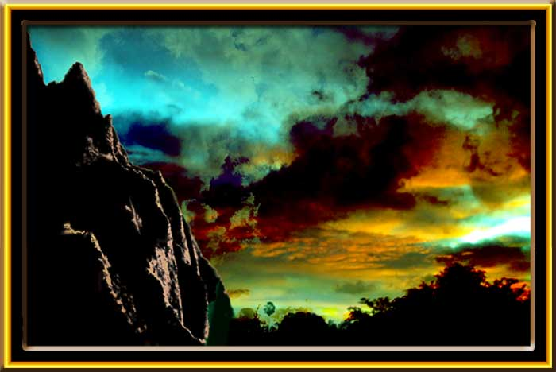

| Trade Wind Clouds. Paintage, watercolor. Early morning clouds coming in on the Hawaiian trade winds are often beautiful. Part of the reason for this is that we will get low level trade clouds moving east to west and displayed against high level clouds moving west to east and catching the rising sun light. I tried to capture that here. The mountains to the left can be seen off the Pali highway driving from Kailua to Honolulu. |